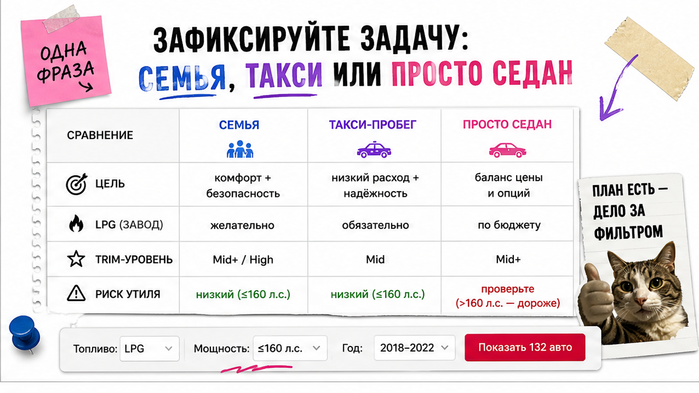
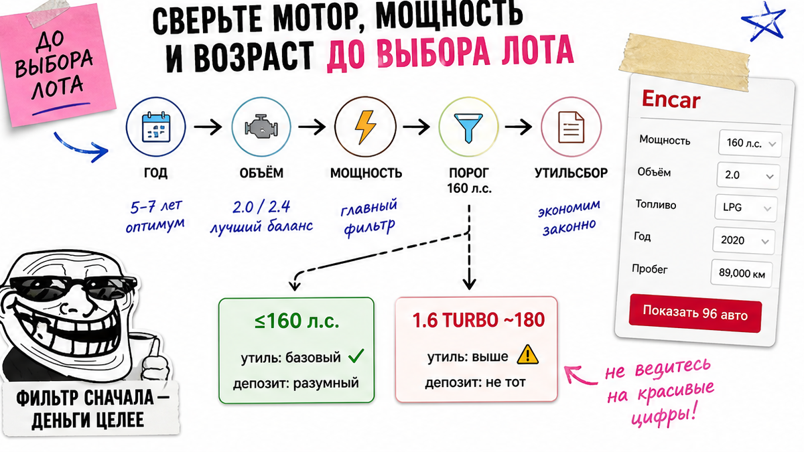
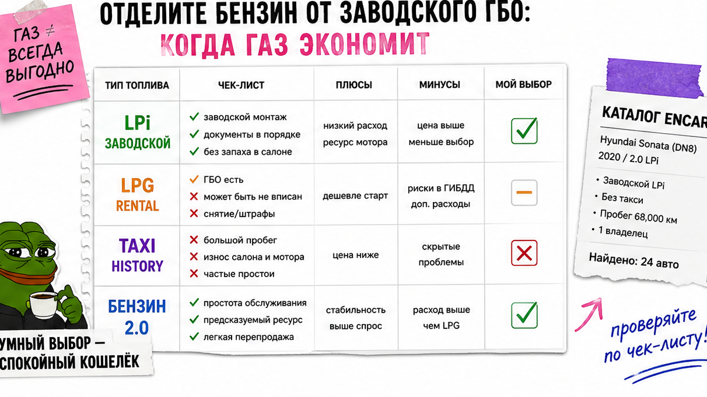

Увидел на Encar Sonata "Premium" или "Inspiration", красивые фото и цену "под ключ" у чужого посредника – и уже тянешься к депозиту. Типичная ошибка: в карточке мелко написано 1.6 Turbo 180 л.с. или LPG (rental car), а замечаешь это после перевода. Ниже – стоп-правила до оплаты: задача → мотор и 160 л.с. → бензин или газ → комплектация по фото → чеклист из 10 пунктов. После гайда сами решите: можно платить или стоп.
TL;DR / Быстрый инсайт: Сначала зафиксируйте задачу (семья / такси-пробег / просто седан), потом фильтр по мощности и возрасту. Для льготного утильсбора физлица смотрите границу 160 л.с.: Sonata 2.0 (~160) и заводской LPi (~146) обычно в зоне, 1.6 Turbo (~180) – коммерческий сценарий. "Соната на газу" без проверки rental/taxi – ловушка. Комплектацию сверяйте с фото салона, не с рекламным названием. Депозит – только после закрытого чеклиста.
Мы в Авто-Сейлс во Владивостоке разбираем лоты Encar с людьми, которые покупают первую машину из Кореи. Не влюбляйтесь в рекламное имя лота – сначала фильтр по мощности и истории, потом вентиляция сидений. Сюрприз: турбо 1.6 на 180 л.с. кажется "выгоднее" из-за меньшего объёма, но после порога с 01.12.2025 коммерческий утильсбор делает такую Sonata заметно дороже атмосферной 2.0 на 160 л.с.
Encar – корейская площадка объявлений: витрина с годом, пробегом, топливом, мощностью и фото. Trust Encar / Carhistory – отчёты по истории. Не верьте только заголовку: мощность, топливо и trim – разные поля, их надо прочитать до оплаты.

Боль старта – не понимать, с какой комплектации начать. На практике люди выбирают "Inspiration", потому что красиво звучит, а потом выясняется, что нужен был спокойный седан или машина под большой пробег.
Сделайте одну фразу: "семья и трасса", "ежедневный седан" или "много километров и экономия на топливе". От этого зависят газ (LPG) и уровень оснащения. Пока фразы нет – shortlist лучше не собирать вовсе.
Сделайте: сначала задача, потом trim. Не делайте: выбирать комплектацию по слову в заголовке посредника – это ломает бюджет.

Главная боль бюджета – "сломать" расчёт утильсбором. С 01.12.2025 для легковых важна мощность: порог 160 л.с. Льготные ставки физлица при выполнении условий – порядка 3 400 ₽ (до 3 лет) и 5 200 ₽ (старше 3 лет). Коммерческий тариф – скачок на сотни тысяч и выше; точные суммы под лот считайте в каталоге, не "в уме". Избегайте самодельных калькуляторов пошлин.
| Версия Sonata | Мощность | Льготный сценарий | Комментарий |
|---|---|---|---|
| 2.0 бензин | ~160 л.с. | Обычно да | Массовый рабочий вариант |
| 2.0 LPi | ~146 л.с. | Обычно да | Экономия на топливе, смотрите историю |
| Hybrid | по документам | Только после сверки | Сумма ДВС + 30-мин. мощность электромотора |
| 1.6 Turbo | ~180 л.с. | Нет | Ловушка "дешевле объём – дороже утиль" |
| 2.5 N Line | ~290 л.с. | Нет | Плюс проверка допуска экспорта |
Стоп-правило по мотору:
Карточка Encar → объём и л.с. → порог 160 → возраст на растаможку → только потом "Inspiration" и цена посредника
Сделайте: списывайте мощность с полей карточки. Не делайте: брать 1.6T "потому что объём меньше" без осознанного коммерческого утиля.

Запрос "соната на газу из кореи" звучит выгодно. На пальцах: заводской LPi – газ с завода, не "баллон у гаража". Но дешёвый LPG-лот часто помечен как rental car: такси и прокат гоняют много, сервис газа (насос в баллоне, фильтры) требует диагностики.
Например, в открытых отчётах встречаются LPG с rental и страховыми ремонтами – сигнал до депозита. Даже Inspiration 2.0 160 л.с. может иметь отметку аренды при "чистой" страховой картине.
Сделайте: при LPG/LPi откройте историю назначения и заложите диагностику газа. Не делайте: брать газ только из-за цены литра, игнорируя пробег и аренду.
Вердикт по газу: заводской LPi имеет смысл при большом пробеге и прозрачной истории. "Просто газ дешевле" без отчёта – ловушка для новичка.
Уровни The Edge в 2026: Premium, S, Exclusive, Inspiration. У S в базе часто уже есть крупный кластер, навигация, вентиляция сидений и ряд ассистентов. Но заголовок на площадке может обобщать.
Типичная ошибка – верить слову "Premium" в шапке. Сверяйте опции и фото: приборка, экран, камеры, вентиляция/подогрев, кнопки ассистентов. Что обещано, то должно быть видно на кадрах салона.
Сделайте: список "должно быть на фото" под выбранный уровень. Не делайте: депозит, пока комплектация подтверждена только текстом посредника.
До перевода соберите пакет: схема состояния и страховые блоки Encar, отчёт Carhistory / Trust по VIN. Ищите крупные выплаты, "карусель" владельцев, rental и невыполненные отзывы.
В реальном проекте подбора мы не обсуждаем депозит без фото или видео осмотра. Нет пакета – нет перевода. Критерий успеха: "можно платить" или "стоп" без ощущения лотереи.
Сделайте: требуйте VIN, историю и осмотр до предоплаты. Не делайте: верить скрину "всё ок" без ссылки на отчёт.
Актуальные лоты и расчёт – в каталоге avto-sales125.ru. Расшифровка карточки Encar – в Telegram avtosales125.
Пройдите список сверху вниз. Результат дня: заполненный чеклист с решением можно платить / стоп – без самодельного калькулятора пошлин в голове.
Критерий успеха: все 10 пунктов зелёные – можно обсуждать депозит. Хотя бы один красный без объяснения – стоп. Итог: вы отсеяли турбо/сомнительный газ и сверили trim с фото.
Офис во Владивостоке (Днепровская 40а, стр. 4) – хаб логистики: СВХ, таможня и выдача по России. Форм на странице нет: бронь и цифры – в каталоге и переписке.
Материал проверен: Редакция Авто-Сейлс (эксперты по авто под заказ из Японии, Кореи и Китая).
Достоверность: факты сверены с разъяснениями ФНС по порогу 160 л.с. (с 01.12.2025), открытыми обзорами моторов Sonata DN8 / The Edge, материалами по комплектациям Premium/S/Exclusive/Inspiration и примерами отчётов истории лотов Encar (в т.ч. LPG rental); актуальные расчёты – в каталоге.
По моторам и логике утильсбора это близкие седаны. Выбирайте по дизайну, подвеске и конкретному лоту с чистой историей. Мощность и комплектацию сверяйте так же, как для Sonata.
Заводской LPi имеет смысл при большом пробеге и прозрачной истории без rental/taxi. Перед депозитом заложите диагностику газа; не берите газ только из-за цены топлива.
Ориентир для льготы физлица – до 160 л.с. при выполнении условий. Sonata 2.0 (~160) и LPi (~146) обычно в зоне; 1.6T (~180) – коммерческий сценарий. Hybrid сверяйте по документам суммарной мощности.
Выпишите год, объём, л.с., топливо и trim; сверьте опции с фото салона; откройте страховую историю и пометки rental. Без отчёта и осмотра депозит не переводите.
Меньший объём иногда выглядит "дешевле" на пошлине, но мощность выше 160 л.с. уводит в коммерческий утильсбор. Сначала фильтр по л.с., потом сравнение цен лотов.
Нет как единственному доказательству. Сверьте список опций и фото панели/салона. Нет совпадения – стоп или запрос дополнительных кадров до оплаты.